평가 방식
다양화 가능
AI 챗봇을 활용
AI의 답안을 고쳐 보기
상호평가·자기평가 -
앱을 직접 제작하여 사용
흐름
평가 문항
평가 실시
채점
피드백
결과 분석
방법
성취 기준 부합 여부 점검
예상 응답 확인 및 문항 수정
평가의 성취 수준을 고려하여
배점을 수정
학생 응답을 예상하여
부분점수를 구체화
AI 챗봇을 활용
AI의 답안을 고쳐 보기
상호평가·자기평가 -
앱을 직접 제작하여 사용
1차 채점 - AI 활용
마지막은 반드시
교사 확인
빠진 점과 고칠 방향을
학생마다 안내
즉각적, 구체적 피드백
학생들이 많이 틀린
문항을 분석하여
오개념을 확인,
다음 수업에
반영할 수 있음.
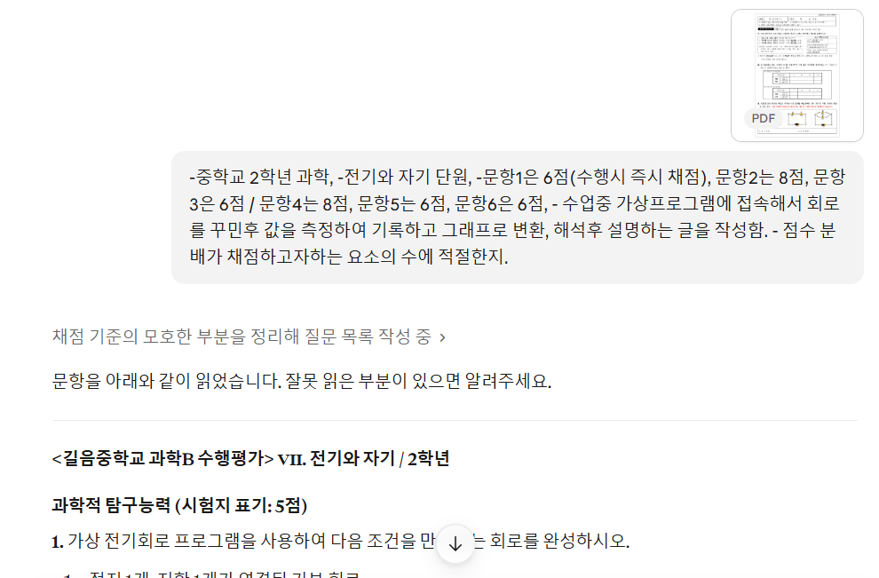
사례 · 평가 문항
AI가 생성한 채점 기준표 예시
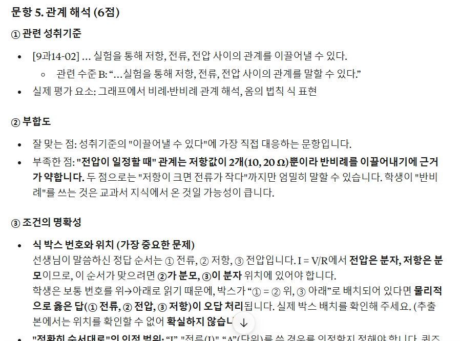
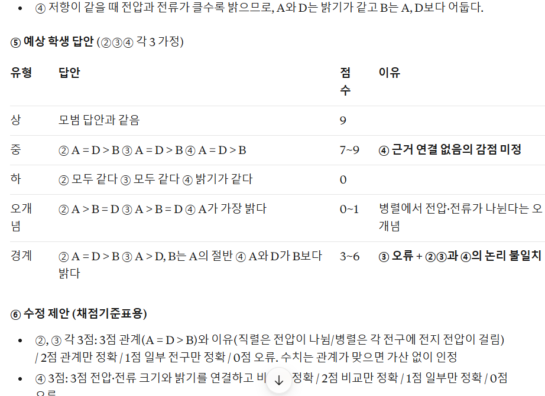
AI 프로젝트 기능 - 지침을 입력하고 대화창에서 순차적으로 문항검토, 수정, 채점 기준 제작까지
진행하도록 만듦
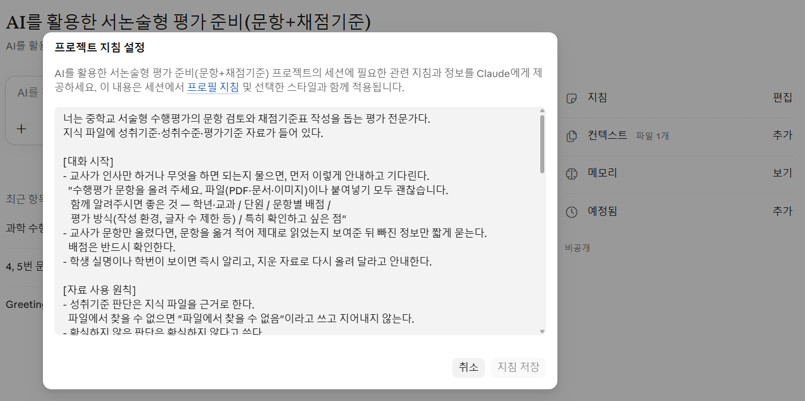
사례 · 평가 실시
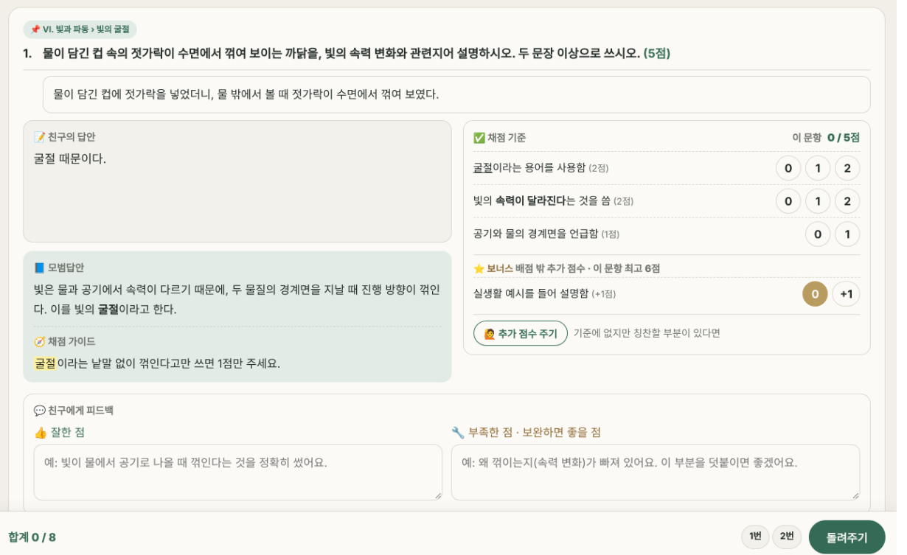
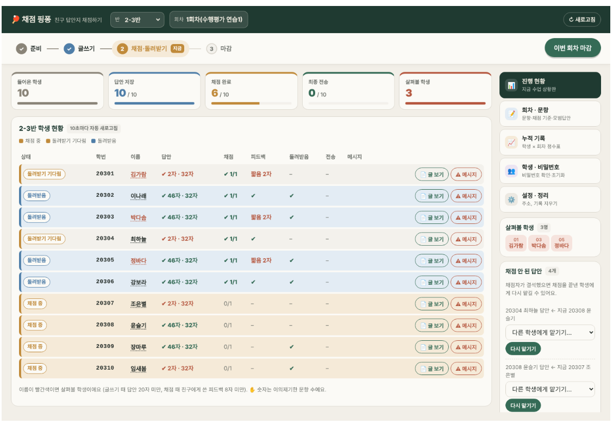
사례 · 채점
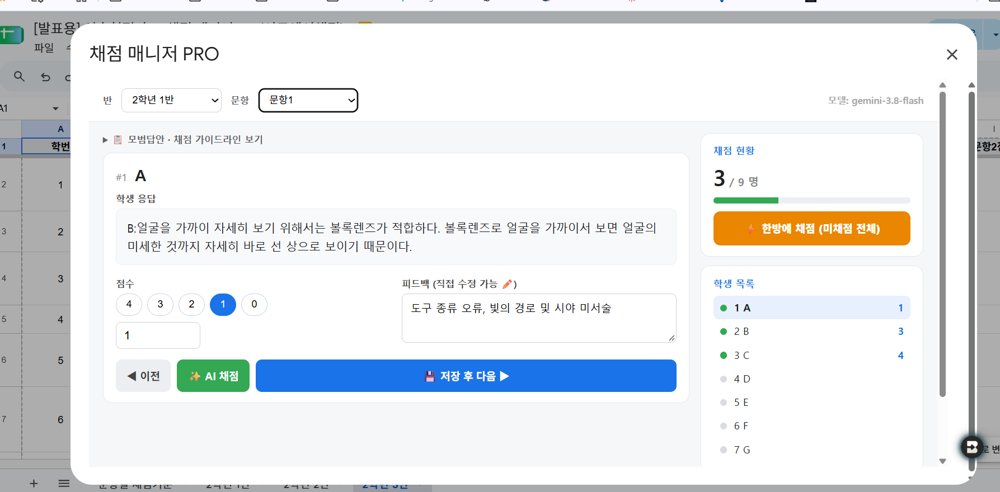
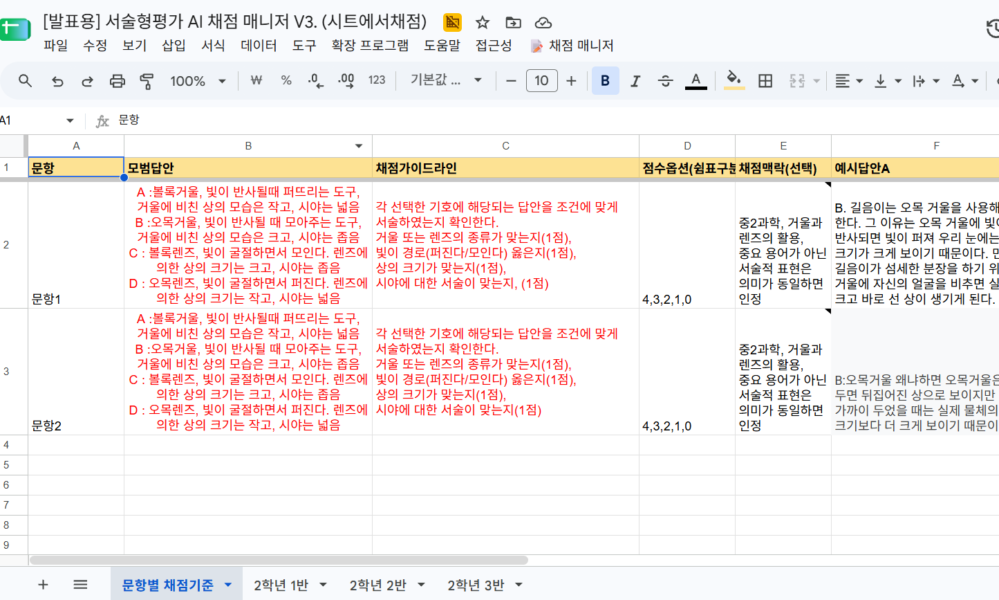
2025-2, 2026-1학기
사례 · 피드백
Autocrat 확장기능을 이용하여 구글시트에서 바로 구글 문서로 개인 피드백 자료 제작
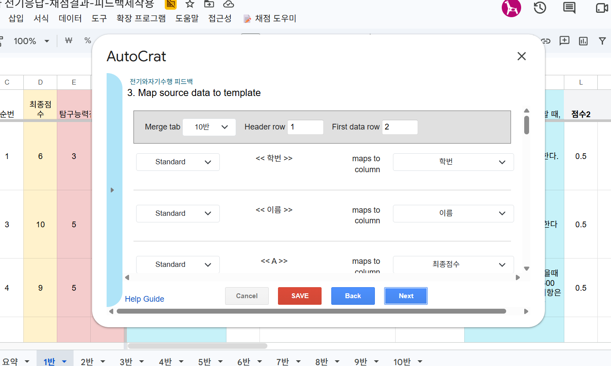
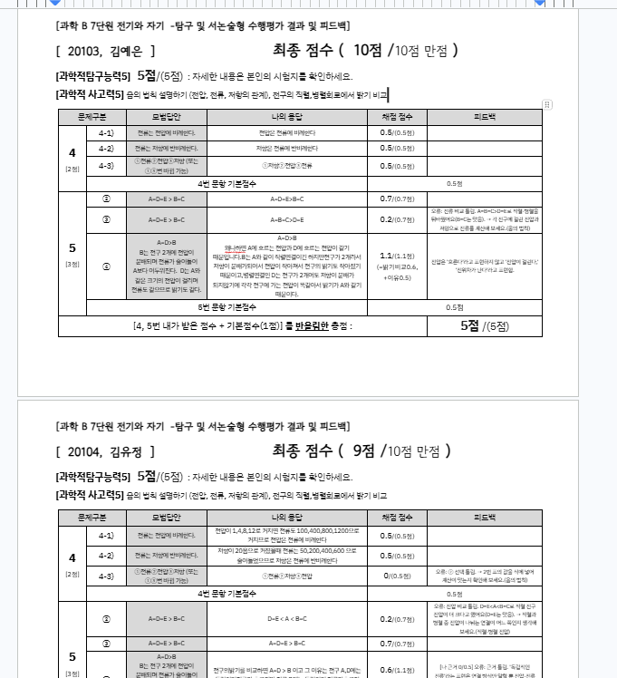
사례 · 결과 분석
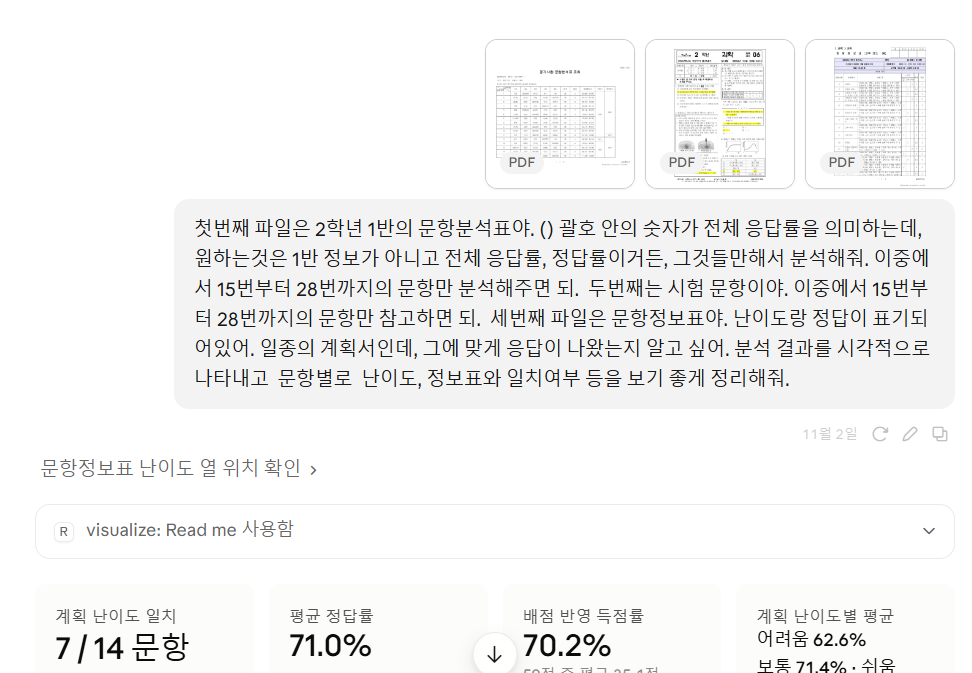
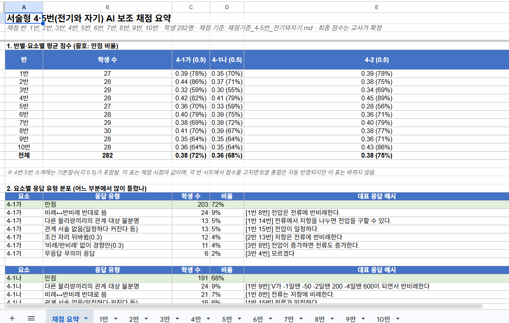